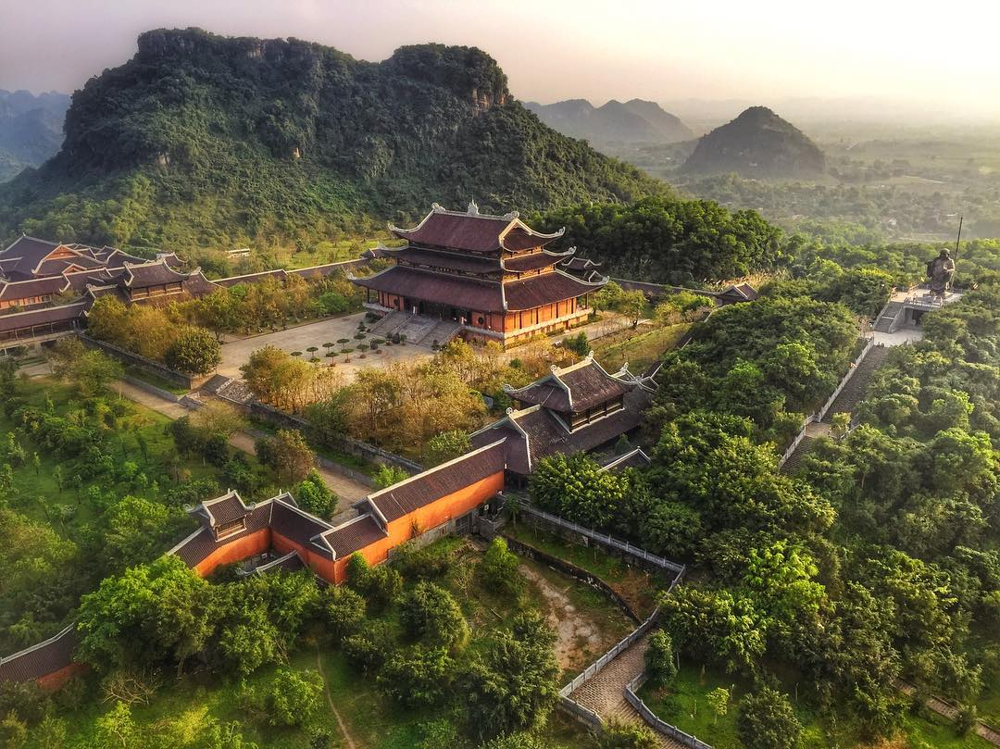

HANG MÚA - Đường lên với gần 500 bậc thang đá cheo leo, đứng trên đỉnh núi Múa, bạn có thể bắt trọn được view đồng lúa bạ ngàn của vùng Tam Cốc tuyện đẹp phía dưới.
TAM CỐC - được mệnh danh là "Hạ Long trên cạn". Đến đây, bạn sẽ được đi thuyền chầm chậm trên dòng sông Ngô Đồng uốn lượn qua các vách núi, cánh đồng.


CHÙA BÁI ĐÍNH - Là một trong những quần thể chùa lớn nhất Đông Nam Á. Có lời truyền tai rằng chùa Bái Đính còn lớn hơn cả quận Hoàn Kiếm. Từng là cố đô Hoa Lư, gắn liền với bề dày lịch sử thời các vua Đinh, Lê, Lý, Trần, đây là nơi có rất nhiều đền thờ của những vị vua và các vị có công trong lịch sử.